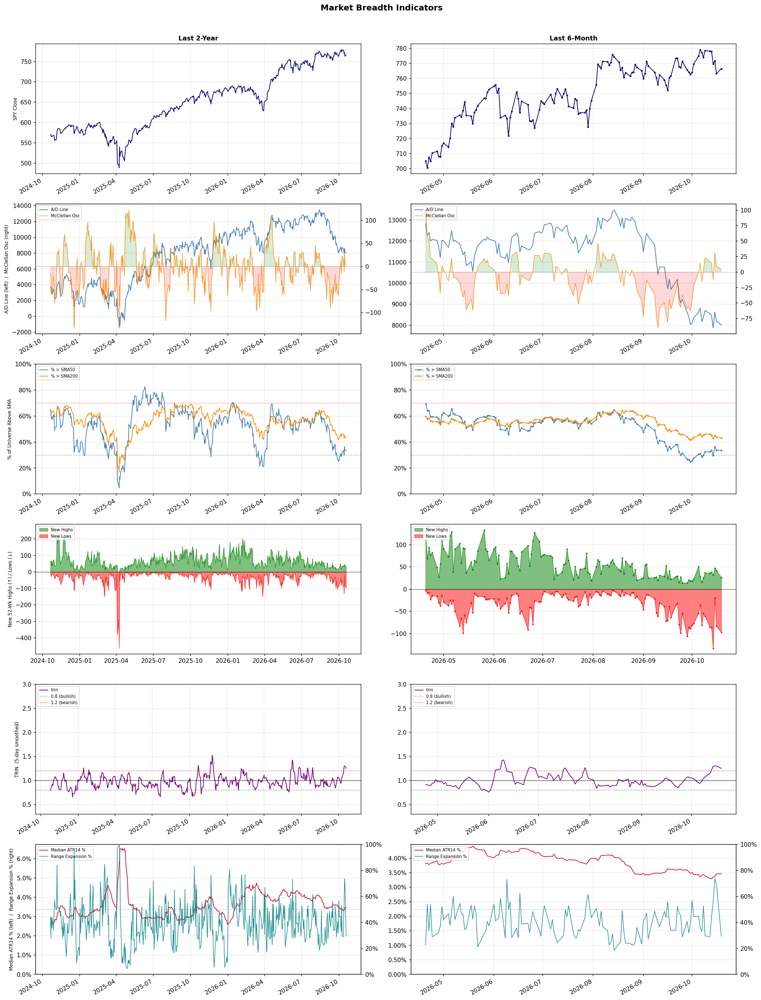

A daily market breadth and sector rotation report for active investors
| Item | Read |
|---|---|
| Regime | Defensive |
| Risk posture | Defensive |
| Universe | 1,315 stocks tracked · 26 new 52-week highs · 30 active swing setups |
| Breadth | only 33.7% of tracked stocks are above SMA50, new lows exceed new highs (97 vs 26) |
| Leadership | Oil & Gas Refining & Marketing, Oil & Gas Integrated, and Oil & Gas E&P |
| Weakest groups | Uranium, Electrical Equipment & Parts, and REIT - Mortgage |
Use this report to prioritize research and chart review; validate entries, stops, liquidity, earnings, and risk before acting.
| Item | Read |
|---|---|
| Primary read | Defensive regime with Defensive risk posture. |
| Research queue | MPC, VLO, DINO, PSX, PBF |
| Leadership focus | Oil & Gas Refining & Marketing, Oil & Gas Integrated, and Oil & Gas E&P |
| Caution list | Uranium, Electrical Equipment & Parts, and REIT - Mortgage |
| Review prompt | Check extension risk, chart location, fundamentals, valuation, and earnings before using any research row. |
| Item | Read |
|---|---|
| Primary read | 3 active risk warnings; use screen output as watchlist input only. |
| Bullish screens | APA, BTE, CNQ, PEB, BOX |
| Bearish screens | BRUN, TLRY, GDS, DJT, OCUL |
| Alerts / levels | Automated trigger, stop, ATR, liquidity, reward/risk, and event-risk levels are pending future enrichment. |
| Review prompt | Open the linked chart, define trigger and invalidation, then check liquidity and event risk independently. |
Risk Posture: Defensive — screen backdrop favors caution; require independent risk review before new exposure
Metric context: McClellan below -50 = elevated selling pressure; below -100 = washout territory. Range Expansion = share of stocks with daily range above their 20-day average. Signal Density = share of tracked names appearing in signal screens.
| Breadth Date | % > SMA50 | % > SMA200 | New Highs | New Lows | McClellan | Median Range | Avg Range | Median ATR14 | Range Expansion | Signal Density |
|---|---|---|---|---|---|---|---|---|---|---|
| 2026-10-19 | 33.7% | 43.1% | 26 | 97 | 4.3 | 2.7% | 3.2% | 3.5% | 29.5% | 0.8% |

Prior comparison date: October 16, 2026
| Metric | Prior | Current | Change |
|---|---|---|---|
| Regime | Defensive | Defensive | unchanged |
| Risk Posture | Defensive | Defensive | unchanged |
| % > SMA50 | 33.6% | 33.7% | +0.1 pts |
| % > SMA200 | 43.9% | 43.1% | -0.8 pts |
| New Highs | 41 | 26 | -15 |
| New Lows | 83 | 97 | -14 |
Top-10 industries entering: Healthcare Plans. Top-10 industries leaving: Financial Data & Stock Exchanges. New multi-signal long setups: APA, BTE, CNQ. New multi-signal short setups: BRUN, DJT, GDS, LAES, LBTYA, LBTYK, OCUL.
| Status | Tickers | Read |
|---|---|---|
| Added | APA, AZTA, BAX, BRUN, BTE, CHD, CL, CNQ | New technical screen matches vs prior report. |
| Removed | ADP, APLE, AVTR, BALL, BEKE, CBRL, CCEP, CME | No longer present in today's technical screen matches. |
| Still Active | BLMN, BOX, CI, HALO, HLN | Appeared in both current and prior reports. |
| Promoted | none | Model Screen Score improved by at least 15 points. |
| Downgraded | BLMN, CI | Model Screen Score declined by at least 15 points. |
| Direction | Industry | ETF | Prior Rank | Current Rank | Days | Rank Change |
|---|---|---|---|---|---|---|
| Rose | Apparel Manufacturing | N/A | 77 | 9 | 42 | +68 |
| Rose | Restaurants | N/A | 81 | 15 | 28 | +66 |
| Rose | Footwear & Accessories | N/A | 88 | 28 | 42 | +60 |
| Rose | Leisure | N/A | 84 | 33 | 28 | +51 |
| Rose | REIT - Hotel & Motel | XLRE | 57 | 8 | 28 | +49 |
Bull: The Apparel Manufacturing sector is gaining relative strength due to a combination of favorable macroeconomic trends and strategic shifts within the industry, as highlighted by recent headlines. The anticipated revival of textile stocks in 2026, driven by trade deals and a shift in sourcing from China, indicates a positive outlook for profitability and competitiveness in the sector. Additionally, the identification of top-performing apparel stocks by analysts, as noted in sources like The Motley Fool and Yahoo Finance, suggests increasing investor confidence and potential for growth within leading companies such as Ralph Lauren and Crocs.
Bear: While the Apparel Manufacturing sector may currently exhibit rising relative strength, this could be misleading given the broader economic uncertainties and potential headwinds such as inflationary pressures and shifting consumer spending habits. Additionally, the anticipated revival of textile stocks due to trade deals and sourcing shifts may not materialize as expected, especially if geopolitical tensions escalate or if alternative sourcing proves more costly or logistically challenging. Furthermore, the optimistic projections from analysts may overlook the inherent volatility in consumer preferences and the ongoing challenges of sustainability and ethical production, which could hinder long-term growth and profitability in the sector.
Verdict: The Apparel Manufacturing sector's rising strength is primarily driven by favorable macroeconomic trends, such as anticipated trade deals and a strategic shift away from reliance on Chinese sourcing, which may enhance profitability for leading companies. However, investors should remain cautious of potential risks, including inflationary pressures and changing consumer preferences, which could undermine growth and profitability if economic conditions deteriorate or if alternative sourcing proves more complex.
Sources: Google News
Bull: The restaurant industry is experiencing a rising relative strength primarily due to a rebound in consumer spending and a shift towards dining out as pandemic-related restrictions ease. This is supported by the positive outlook highlighted in Zacks for companies like Brinker International and Darden Restaurants, which indicates strong performance potential within the sector. Additionally, despite some short-term fluctuations in stocks like Chipotle, the overall trend suggests resilience and growth, as evidenced by the rising interest in tokenized restaurant stocks, indicating innovative investment opportunities within the industry.
Bear: While the restaurant industry may currently exhibit rising relative strength, this trend could be misleading due to temporary factors such as pent-up consumer demand post-pandemic and government stimulus, which may not be sustainable in the long term. Additionally, rising inflation and economic uncertainty could lead to decreased discretionary spending, impacting profitability for restaurants. The recent declines in stocks like Chipotle and the overall dip in major players like McDonald's and Starbucks suggest that the sector may face significant headwinds that could undermine the bullish outlook.
Verdict: The restaurant industry's rising relative strength is primarily driven by a rebound in consumer spending as pandemic-related restrictions ease, leading to increased dining out and innovative investment opportunities. However, key risks include potential sustainability issues due to temporary factors like pent-up demand and government stimulus, alongside rising inflation and economic uncertainty that could dampen discretionary spending and profitability in the sector. Investors should remain cautious and monitor economic indicators closely to gauge the longevity of this growth trend.
Sources: Google News
Bull: The Footwear & Accessories industry is experiencing rising relative strength primarily due to strong consumer demand and positive earnings reports from key players, as highlighted in the recent Q2 results for companies like Under Armour and VF Corp. Additionally, the identification of top-performing stocks, as noted by The Motley Fool and Yahoo Finance, suggests that investors are increasingly optimistic about growth opportunities in this sector, driven by trends in consumer discretionary spending and a shift towards more premium and innovative footwear products.
Bear: While the Footwear & Accessories industry may currently exhibit rising relative strength, this trend could be misleading due to short-term consumer enthusiasm rather than sustainable growth. The positive earnings reports from companies like Under Armour and VF Corp may reflect temporary factors such as inventory restocking or one-time sales boosts rather than a robust, long-term demand shift. Additionally, rising inflation and potential economic downturns could dampen consumer discretionary spending, leading to a contraction in the sector as consumers prioritize essential goods over premium footwear and accessories.
Verdict: The Footwear & Accessories industry is likely experiencing rising relative strength due to robust consumer demand and strong earnings from key players, indicating a positive shift towards premium products. However, investors should remain cautious of the bear case, as potential economic downturns and rising inflation could significantly impact consumer discretionary spending, leading to a contraction in the sector. It is advisable for investors to monitor economic indicators closely and consider diversifying their portfolios to mitigate risks associated with consumer spending shifts.
Sources: Google News
Bull: The Leisure sector is experiencing rising relative strength primarily due to a robust recovery in travel and tourism as consumer demand rebounds post-pandemic, highlighted by multiple sources noting growth opportunities within the industry. The positive sentiment around stocks like Airbnb, as indicated in the headlines, reflects a shift in consumer preferences towards experiential spending, further bolstered by forecasts from The Motley Fool suggesting strong performance for travel and tourism stocks through 2026. Additionally, despite some cyclical headwinds mentioned in Seeking Alpha, the overall outlook remains optimistic, driven by pent-up consumer demand and a resurgence in leisure activities.
Bear: While the leisure sector may currently exhibit rising relative strength, the bullish outlook fails to account for significant macroeconomic headwinds that could dampen growth, such as rising inflation, potential interest rate hikes, and geopolitical uncertainties that may impact consumer spending. Additionally, the cyclical nature of the industry means that any recovery could be short-lived, especially if economic conditions shift, leading to reduced discretionary spending on travel and leisure activities. Furthermore, the competitive landscape, particularly with companies like Airbnb facing regulatory scrutiny and market saturation, could hinder sustained growth in the sector.
Verdict: The leisure sector's rising strength is fundamentally driven by a robust recovery in travel and tourism, fueled by pent-up consumer demand for experiential spending post-pandemic, as indicated by positive forecasts for travel stocks. However, key risks include macroeconomic pressures such as rising inflation and potential interest rate hikes, which could dampen consumer spending and lead to a contraction in discretionary leisure expenditures. Investors should remain vigilant of these macroeconomic factors and regulatory challenges facing major players like Airbnb, as they could significantly impact the sector's growth trajectory.
Sources: Google News
Bull: The rising relative strength of the Hotel & Motel REIT sector is primarily driven by robust revenue per available room (RevPAR) growth, as indicated by the bullish upgrade for Park Hotels & Resorts, which reflects improving occupancy rates and pricing power in the hospitality market. Additionally, positive sentiment from sources like Morningstar and The Motley Fool, highlighting the best REITs to buy, suggests a growing investor confidence in the sector's recovery and potential for strong returns as travel demand continues to rebound. This combination of favorable market conditions and investor optimism positions the Hotel & Motel REITs for sustained growth.
Bear: While the rising relative strength of the Hotel & Motel REIT sector may seem promising, it is crucial to consider the potential headwinds that could undermine this bullish narrative. Factors such as rising interest rates, which increase borrowing costs and could dampen consumer spending on travel, along with potential economic downturns that may lead to reduced travel demand, pose significant risks. Furthermore, the current optimism may be overly reliant on short-term trends in RevPAR, potentially overlooking structural challenges in the hospitality industry, such as increased competition from alternative lodging options and ongoing labor shortages.
Verdict: The Hotel & Motel REIT sector's rising strength is fundamentally driven by robust RevPAR growth, fueled by improving occupancy rates and pricing power as travel demand rebounds. However, key risks remain, particularly from rising interest rates and potential economic downturns that could dampen consumer spending on travel, which investors should closely monitor to assess the sustainability of this growth trend.
Sources: Google News
| Direction | Industry | ETF | Prior Rank | Current Rank | Days | Rank Change |
|---|---|---|---|---|---|---|
| Fell | Agricultural Inputs | N/A | 5 | 77 | 42 | -72 |
| Fell | Capital Markets | KCE | 8 | 75 | 28 | -67 |
| Fell | Uranium | URA | 21 | 87 | 42 | -66 |
| Fell | Semiconductor Equipment & Materials | SOXX | 4 | 67 | 14 | -63 |
| Fell | Electronic Components | XLK | 6 | 69 | 14 | -63 |
Bear: While the bull analyst points to weak monsoon demand and rising costs as primary factors for the Agricultural Inputs sector's decline, it's critical to recognize that these issues are symptomatic of deeper, systemic challenges facing the industry, such as increasing regulatory pressures and sustainability concerns that may lead to higher compliance costs. Furthermore, as capital flows into more economically sensitive sectors, the Agricultural Inputs segment could continue to underperform, reflecting a broader shift in investor sentiment away from traditional agricultural stocks, which may struggle to regain momentum in a rapidly evolving market landscape.
Bull: The Agricultural Inputs sector is experiencing a decline in relative strength primarily due to weak monsoon demand and rising costs, which have negatively impacted earnings for agrochemical stocks, as highlighted by Indiatimes. Additionally, while the broader materials sector is breaking out, the Agricultural Inputs segment is lagging behind, as noted by Morningstar, suggesting that investors may be reallocating capital towards more economically sensitive sectors that are showing stronger momentum.
Verdict: The Agricultural Inputs sector's decline is primarily driven by weak monsoon demand and rising costs, which have adversely affected earnings in agrochemical stocks. However, a key risk lies in the increasing regulatory pressures and sustainability concerns that could further elevate compliance costs and hinder recovery, suggesting that investors should approach this sector with caution and consider reallocating to more resilient industries.
Sources: Google News
Bear: While the bull analyst attributes the decline in the Capital Markets sector to the tech sell-off and investor sentiment, it is crucial to recognize that this downturn may indicate deeper structural issues within the Capital Markets themselves, such as rising interest rates and tightening monetary policy that could hinder liquidity and trading volumes. Furthermore, the midterm political uncertainty may exacerbate volatility and reduce investor appetite for capital markets, suggesting that the challenges facing this sector are not merely a byproduct of tech performance, but rather a sign of broader economic headwinds that could persist well beyond the current market cycle.
Bull: The Capital Markets sector is likely experiencing a decline in relative strength primarily due to the extended sell-off in the tech sector, which has negatively impacted overall market sentiment and investor confidence. As highlighted by LancasterOnline, this downturn in tech can create a ripple effect across various sectors, including Capital Markets, as investors may be reallocating their capital away from riskier assets. Additionally, the midterm mindset mentioned by RBC Wealth Management suggests that uncertainty surrounding political and economic policies could further weigh on market performance, leading to a cautious approach from investors in the Capital Markets space.
Verdict: The Capital Markets sector's decline is primarily driven by the extended sell-off in the tech sector, which has dampened investor sentiment and led to capital reallocations away from riskier assets. However, a critical risk highlighted by the bear thesis is the potential for rising interest rates and tightening monetary policy to further constrain liquidity and trading volumes, indicating that the challenges facing this sector may reflect deeper structural issues rather than being solely a reaction to tech performance. Investors should remain cautious and consider the broader economic implications when assessing opportunities in Capital Markets.
Sources: Google News
Bear: While the bull analyst highlights a rebound in nuclear stocks and a long-term bullish sentiment towards uranium, the ongoing sector correction underscores significant risks that could undermine this optimism. The disparity between profitable producers and loss-making developers suggests that many companies in the space may struggle to achieve sustainable growth, particularly as rising interest rates and inflation pressures could dampen investment in capital-intensive projects. Additionally, the volatility in uranium stocks indicates that investor sentiment may be more fragile than it appears, raising concerns about the sector's ability to maintain momentum in the face of economic uncertainty.
Bull: The recent decline in the relative strength of uranium stocks can be attributed to a sector correction that has highlighted the disparity between profitable uranium producers and loss-making developers, as noted in the ChartMill headline. This correction may have led to increased investor caution, particularly as the market reassesses the viability of various companies within the sector. However, the rebound in nuclear stocks, as reported by 24/7 Wall St., suggests that despite the current volatility, there remains a strong long-term bullish sentiment towards uranium, driven by the growing demand for nuclear energy as a cleaner alternative to fossil fuels.
Verdict: The recent decline in uranium stocks is primarily driven by a sector correction that has exposed the financial disparities between profitable uranium producers and struggling developers, prompting investor caution. Key risks include rising interest rates and inflation, which could hinder investment in capital-intensive projects and exacerbate the volatility of uranium stocks, potentially undermining the sector's long-term growth prospects. Investors should closely monitor these economic indicators and the financial health of companies within the industry before making decisions.
Sources: Google News
Bear: While profit-taking may explain some of the recent declines, the broader trend of falling relative strength in the Semiconductor Equipment & Materials sector raises concerns about underlying demand and market saturation. The shift in investor focus towards materials and parts could indicate a diminishing growth outlook for equipment manufacturers, as the AI cycle may not provide the same level of sustained demand for equipment as previously anticipated, particularly given the cyclical nature of the semiconductor industry and potential overcapacity issues.
Bull: The recent decline in the Semiconductor Equipment & Materials sector's relative strength can be attributed to profit-taking after a strong performance over the past year, as highlighted by the significant drops in stocks like Applied Materials and Lam Research. Additionally, the shift in investor focus towards materials, parts, and equipment, as indicated by NH-Amundi's commentary on the AI cycle just beginning, suggests a transitional phase where investors may be reallocating capital within the semiconductor ecosystem, leading to short-term volatility in equipment stocks.
Verdict: The recent decline in the Semiconductor Equipment & Materials sector appears to be driven by profit-taking after a robust performance, coupled with a strategic shift in investor focus towards materials and parts as the AI cycle evolves. However, the key risk lies in the bear thesis that suggests a potential oversupply and waning demand for equipment, which could hinder growth prospects and lead to further declines if market saturation becomes pronounced. Investors should remain cautious and consider reallocating to more resilient segments within the semiconductor ecosystem or closely monitor demand indicators before making significant investments in equipment stocks.
Sources: Google News
Bear: While the bull analyst points to Amphenol's strong performance as a beacon of hope, it's crucial to recognize that this is an outlier in a sector grappling with significant challenges. The mixed Q2 earnings, particularly the sharp decline in Littelfuse and the struggles faced by TTM Technologies and Belden, highlight a broader trend of weakening demand and profitability pressures across the electronic components industry. This volatility suggests that the sector may be entering a more prolonged period of instability, raising concerns about its ability to sustain growth in the face of rising costs and shifting market dynamics.
Bull: The recent decline in the relative strength of the Electronic Components sector can be attributed to mixed Q2 earnings results, with companies like Littelfuse experiencing significant losses amid broader sector-wide selling, as highlighted by AlphaStreet. Additionally, while Amphenol's strong performance showcases potential within the industry, the overall sentiment appears dampened by the volatility in earnings reports from other key players, such as TTM Technologies and Belden, creating uncertainty among investors regarding the sector's growth trajectory.
Verdict: The recent decline in the Electronic Components sector is primarily driven by mixed Q2 earnings results, with significant losses from key players like Littelfuse and ongoing struggles at TTM Technologies and Belden, indicating weakening demand and profitability pressures. The key risk highlighted by the bear thesis is the potential for prolonged instability in the sector, which could hinder growth prospects amidst rising costs and evolving market dynamics. Investors should remain cautious and closely monitor earnings trends and market conditions before making any commitments in this space.
Sources: Google News
| Industry | Rank | ETF | 7d | 14d | 28d | 42d | Chg 42d | Size | 20D | 60D | Composite | Active Setups |
|---|---|---|---|---|---|---|---|---|---|---|---|---|
| Oil & Gas Refining & Marketing | 1 | CRAK | 1 | 1 | 2 | 1 | 0 | 7 | 10.9% | 35.2% | 0.993 | 0 |
| Oil & Gas Integrated | 2 | XLE | 5 | 5 | 14 | 7 | +5 | 10 | 10.5% | 16.4% | 0.931 | 0 |
| Oil & Gas E&P | 3 | XOP | 21 | 19 | 46 | 8 | +5 | 26 | 10.7% | 13.5% | 0.917 | 1 |
| Apparel Retail | 4 | XRT | 6 | 12 | 22 | 38 | +34 | 8 | 10.8% | 14.6% | 0.912 | 0 |
| Household & Personal Products | 5 | XLP | 8 | 24 | 30 | 24 | +19 | 12 | 10.3% | 14.4% | 0.899 | 1 |
| Discount Stores | 6 | XRT | 11 | 18 | 31 | 37 | +31 | 7 | 9.5% | 13.7% | 0.896 | 1 |
| Health Information Services | 7 | N/A | 2 | 2 | 3 | 4 | -3 | 12 | 1.5% | 37.1% | 0.824 | 0 |
| REIT - Hotel & Motel | 8 | XLRE | 12 | 11 | 57 | 55 | +47 | 9 | 8.1% | -1.0% | 0.820 | 0 |
| Apparel Manufacturing | 9 | N/A | 19 | 42 | 74 | 77 | +68 | 6 | 16.9% | 8.7% | 0.819 | 0 |
| Healthcare Plans | 10 | IHF | 32 | 28 | 42 | 39 | +29 | 10 | 4.9% | -3.3% | 0.805 | 1 |
Rank columns (7d–42d) show the industry's rank that many trading days ago — lower is stronger. Chg 42d = rank change vs 42 trading days ago — positive means the industry moved up. 20D and 60D are the mean stock return within the industry over that period. Active Setups: count of today's swing-trade candidates from this industry appearing across all signal screens.
| Industry | Rank | ETF | 7d | 14d | 28d | 42d | Chg 42d | Size | 20D | 60D | Composite | Active Setups |
|---|---|---|---|---|---|---|---|---|---|---|---|---|
| Uranium | 87 | URA | 83 | 85 | 71 | 21 | -66 | 6 | -22.7% | -19.0% | 0.030 | 0 |
| Electrical Equipment & Parts | 86 | XLI | 73 | 53 | 43 | 84 | -2 | 12 | -25.5% | -26.7% | 0.035 | 0 |
| REIT - Mortgage | 85 | N/A | 86 | 86 | 68 | 44 | -41 | 11 | -18.1% | -23.5% | 0.055 | 0 |
| Aerospace & Defense | 84 | ITA | 82 | 72 | 59 | 86 | +2 | 26 | -18.3% | -16.9% | 0.075 | 0 |
| Solar | 83 | TAN | 79 | 76 | 77 | 87 | +4 | 8 | -13.7% | -24.9% | 0.080 | 0 |
| Other Industrial Metals & Mining | 82 | N/A | 80 | 78 | 54 | 45 | -37 | 21 | -23.2% | -14.0% | 0.084 | 0 |
| Gambling | 81 | N/A | 87 | 83 | 85 | 43 | -38 | 5 | -11.6% | -22.3% | 0.085 | 0 |
| Utilities - Renewable | 80 | N/A | 78 | 73 | 55 | 83 | +3 | 6 | -20.6% | -22.9% | 0.089 | 0 |
| Resorts & Casinos | 79 | N/A | 85 | 87 | 86 | 85 | +6 | 6 | -10.8% | -21.8% | 0.107 | 0 |
| Airlines | 78 | N/A | 63 | 52 | 40 | 74 | -4 | 8 | -16.2% | -20.3% | 0.141 | 0 |
Rank columns (7d–42d) show the industry's rank that many trading days ago — lower is stronger. Chg 42d = rank change vs 42 trading days ago — positive means the industry moved up. 20D and 60D are the mean stock return within the industry over that period. Active Setups: count of today's swing-trade candidates from this industry appearing across all signal screens.
These are research candidates from top-ranked stocks, capped at five names per industry to avoid over-concentration. Returns shown (60D, 120D, 250D) are historical — they reflect where prices have already moved, not forward expectations. Extension Risk flags names that may require extra patience or a better entry point. They are not buy signals.
Chart: TV = TradingView chart (opens in browser); PDF = local chart file (if downloaded).
| Ticker | Name | Industry | Industry Rank | Market Cap | 60D Hist | 120D Hist | 250D Hist | Extension Risk | Research Reason | Chart |
|---|---|---|---|---|---|---|---|---|---|---|
| MPC | Marathon Petroleum | Oil & Gas Refining & Marketing | 1 | N/A | 53.6% | 105.0% | 158.6% | Extended | Top-ranked in industry; extended | TV |
| VLO | Valero Energy | Oil & Gas Refining & Marketing | 1 | N/A | 43.8% | 81.9% | 176.3% | Constructive | Top-ranked in industry | TV |
| DINO | HF Sinclair | Oil & Gas Refining & Marketing | 1 | N/A | 41.8% | 101.0% | 144.1% | Extended | Top-ranked in industry; extended | TV |
| PSX | Phillips 66 | Oil & Gas Refining & Marketing | 1 | N/A | 41.3% | 78.2% | 129.5% | Constructive | Top-ranked in industry | TV |
| PBF | PBF Energy | Oil & Gas Refining & Marketing | 1 | N/A | 32.3% | 98.5% | 182.5% | Constructive | Top-ranked in industry | TV |
| PBR | Petroleo Brasileiro SA Petrobras | Oil & Gas Integrated | 2 | N/A | 40.2% | 24.9% | 128.1% | Constructive | Top-ranked in industry | TV |
| SU | Suncor Energy | Oil & Gas Integrated | 2 | N/A | 19.9% | 21.8% | 108.8% | Constructive | Top-ranked in industry | TV |
| SHEL | Shell | Oil & Gas Integrated | 2 | N/A | 19.6% | 21.8% | 49.3% | Constructive | Top-ranked in industry | TV |
| XOM | Exxon Mobil | Oil & Gas Integrated | 2 | N/A | 14.3% | 20.0% | 62.8% | Constructive | Top-ranked in industry | TV |
| BP | BP PLC | Oil & Gas Integrated | 2 | N/A | 14.2% | 9.2% | 56.5% | Constructive | Top-ranked in industry | TV |
| NOG | Northern Oil & Gas | Oil & Gas E&P | 3 | N/A | 33.6% | 5.1% | 41.0% | Constructive | Top-ranked in industry | TV |
| BTE | Baytex Energy | Oil & Gas E&P | 3 | N/A | 25.4% | 9.6% | 140.4% | Constructive | Top-ranked in industry | TV |
| OVV | Ovintiv | Oil & Gas E&P | 3 | N/A | 11.5% | 21.0% | 97.6% | Constructive | Top-ranked in industry | TV |
| MUR | Murphy Oil | Oil & Gas E&P | 3 | N/A | 10.3% | 8.3% | 60.6% | Constructive | Top-ranked in industry | TV |
| AR | Antero Resources | Oil & Gas E&P | 3 | N/A | 10.1% | 0.7% | 21.9% | Constructive | Top-ranked in industry | TV |
| ANF | Abercrombie & Fitch | Apparel Retail | 4 | N/A | 72.7% | 90.1% | 143.1% | Extended | Top-ranked in industry; extended | TV |
| GAP | Gap Inc | Apparel Retail | 4 | N/A | 24.7% | -2.1% | 10.3% | Constructive | Top-ranked in industry | TV |
| URBN | Urban Outfitters | Apparel Retail | 4 | N/A | 24.1% | 24.4% | 29.8% | Constructive | Top-ranked in industry | TV |
| AEO | American Eagle Outfitters | Apparel Retail | 4 | N/A | 6.2% | 4.7% | 18.9% | Constructive | Top-ranked in industry | TV |
| TJX | TJX Companies | Apparel Retail | 4 | N/A | -4.1% | -5.7% | 4.1% | Lagging | Top-ranked in industry; lagging | TV |
These are technical screen matches from existing signal files. They are not trade recommendations. Trigger, stop, ATR, liquidity, reward/risk, and event risk still require separate validation until those inputs are available.
Model Screen Score is weighted by signal count, industry rank, freshness, and setup type. It is not a probability of profit, expected return, or suitability rating. Industry cap: max 3 candidates per industry.
Signal glossary: Momentum Pullback = stock in an uptrend that has pulled back 10–30% and shows re-entry conditions. MA Compression = short- and long-term moving averages converging, often preceding a directional move. Three-Day Up/Down = three consecutive closes in the same direction. New 52Wk High/Low = price reached a new annual extreme.
Chart: TV = TradingView chart (opens in browser); PDF = local chart file (if downloaded).
| Ticker | Industry | Setups | Close | Industry Rank | Signal Count | Model Screen Score | Reason | Chart |
|---|---|---|---|---|---|---|---|---|
| APA | Oil & Gas E&P | New 52Wk High; Three-Day Up | 49.76 | 3 | 2 | 100 | Multi-signal; top industry breakout | TV |
| BTE | Oil & Gas E&P | New 52Wk High; Three-Day Up | 5.40 | 3 | 2 | 100 | Multi-signal; top industry breakout | TV |
| CNQ | Oil & Gas E&P | New 52Wk High; Three-Day Up | 54.12 | 3 | 2 | 100 | Multi-signal; top industry breakout | TV |
| PEB | REIT - Hotel & Motel | New 52Wk High; Three-Day Up | 20.10 | 8 | 2 | 85 | Multi-signal; top industry breakout | TV |
| BOX | Software - Infrastructure | New 52Wk High; Three-Day Up | 40.46 | 26 | 2 | 70 | Multi-signal; new-high strength | TV |
| HLN | Drug Manufacturers - Specialty & Generic | MA Compression; Three-Day Up | 10.14 | 27 | 2 | 65 | Multi-signal; compression setup | TV |
| HALO | Biotechnology | New 52Wk High; Three-Day Up | 122.50 | 49 | 2 | 65 | Multi-signal; new-high strength | TV |
| XERS | Biotechnology | New 52Wk High; Three-Day Up | 10.95 | 49 | 2 | 65 | Multi-signal; new-high strength | TV |
| CVE | Oil & Gas Integrated | Three-Day Up | 33.23 | 2 | 1 | 55 | Single-signal; top industry setup | TV |
| CHD | Household & Personal Products | MA Compression | 104.09 | 5 | 1 | 53 | Single-signal; top industry setup | TV |
| CL | Household & Personal Products | MA Compression | 93.39 | 5 | 1 | 53 | Single-signal; top industry setup | TV |
| KMB | Household & Personal Products | MA Compression | 105.41 | 5 | 1 | 53 | Single-signal; top industry setup | TV |
| COST | Discount Stores | MA Compression | 995.53 | 6 | 1 | 53 | Single-signal; top industry setup | TV |
| BLMN | Restaurants | Momentum Pullback | 9.95 | 15 | 1 | 50 | Single-signal; pullback setup | TV |
| CI | Healthcare Plans | MA Compression | 298.50 | 10 | 1 | 45 | Single-signal; top industry setup | TV |
| QSR | Restaurants | MA Compression | 74.34 | 15 | 1 | 45 | Single-signal; compression setup | TV |
| AZTA | Medical Instruments & Supplies | Momentum Pullback | 34.84 | 18 | 1 | 42 | Single-signal; pullback setup | TV |
| BAX | Medical Instruments & Supplies | Momentum Pullback | 24.99 | 18 | 1 | 42 | Single-signal; pullback setup | TV |
| INN | REIT - Hotel & Motel | Three-Day Up | 6.66 | 8 | 1 | 40 | Single-signal; top industry setup | TV |
| NAVN | Software - Application | Three-Day Up | 25.67 | 12 | 1 | 40 | Single-signal; upside pattern | TV |
Bearish setups — stocks making new lows or showing persistent downside patterns. Validate carefully before acting.
| Ticker | Industry | Setups | Close | Industry Rank | Signal Count | Model Screen Score | Reason | Chart |
|---|---|---|---|---|---|---|---|---|
| BRUN | Software - Infrastructure | New 52Wk Low; Three-Day Down | 8.78 | 26 | 2 | 40 | Multi-signal; new-low weakness | TV |
| TLRY | Drug Manufacturers - Specialty & Generic | New 52Wk Low; Three-Day Down | 3.03 | 27 | 2 | 40 | Multi-signal; new-low weakness | TV |
| GDS | Information Technology Services | New 52Wk Low; Three-Day Down | 22.47 | 37 | 2 | 40 | Multi-signal; new-low weakness | TV |
| DJT | Internet Content & Information | New 52Wk Low; Three-Day Down | 6.43 | 42 | 2 | 35 | Multi-signal; new-low weakness | TV |
| OCUL | Biotechnology | New 52Wk Low; Three-Day Down | 6.29 | 49 | 2 | 35 | Multi-signal; new-low weakness | TV |
| LAES | Semiconductors | New 52Wk Low; Three-Day Down | 1.67 | 53 | 2 | 35 | Multi-signal; new-low weakness | TV |
| PSEC | Asset Management | New 52Wk Low; Three-Day Down | 1.51 | 57 | 2 | 35 | Multi-signal; new-low weakness | TV |
| LBTYA | Telecom Services | New 52Wk Low; Three-Day Down | 7.50 | 66 | 2 | 25 | Multi-signal; new-low weakness | TV |
| LBTYK | Telecom Services | New 52Wk Low; Three-Day Down | 7.46 | 66 | 2 | 25 | Multi-signal; new-low weakness | TV |
| TKC | Telecom Services | New 52Wk Low; Three-Day Down | 4.87 | 66 | 2 | 25 | Multi-signal; new-low weakness | TV |
How To Use This Report
| Use | Purpose |
|---|---|
| Market map | Start with breadth, regime, risk warnings, and what changed since the prior report. |
| Industry scan | Use leading, deteriorating, rising, and declining industries to focus research. |
| Research queue | Treat long-term candidates as names for deeper fundamental, valuation, and chart review. |
| Technical review | Treat bullish and bearish screen matches as watchlist inputs that require independent trigger, stop, liquidity, and event-risk checks. |
| Source follow-up | Use chart links and source files to verify raw inputs before relying on any row. |
What This Report Is Not
| Not | Meaning |
|---|---|
| Investment advice | The report does not evaluate personal objectives, risk tolerance, tax situation, account type, or suitability. |
| Buy/sell recommendation | Named tickers are research candidates or screen matches, not recommendations to transact. |
| Price target | The report does not provide fair value estimates, targets, or expected returns. |
| Trade plan | Trigger, stop, sizing, reward/risk, liquidity, and event-risk review remain separate user work. |
| Performance claim | Model Screen Score is not validated historical performance or a forecast of future results. |
| Item | Note |
|---|---|
| Version | Daily Report Methodology v1 |
| Model Screen Score | Screen-fit rank based on signal count, industry rank, freshness, and setup type. |
| Not predictive proof | The score is not expected return, probability of profit, historical validation, or suitability analysis. |
| Industry ranks | Composite industry ranks use existing daily ranking outputs and historical rank columns when available. |
| Research candidates | Long-term rows are research candidates from ranked stocks and leading industries, with historical returns labeled as historical only. |
| Technical matches | Bullish and bearish rows are screen matches requiring independent chart, trigger, stop, liquidity, and event-risk review. |
| Source | Status | Rows | Path |
|---|---|---|---|
| Market breadth | present | 1253 | breadth_20261019.csv |
| Industry composite rankings | present | 87 | all_industry_composite_20261019.csv |
| Top ranked stocks | present | 107 | top_ranked_composite_20261019.csv |
| All ranked stocks | present | 1315 | all_stocks_composite_sorted_20261019.csv |
| Top momentum pullbacks | present | 1467 | top_momentum_pullbacks_20261019.csv |
| MA compression | present | 1467 | ma_compression_stocks_20261019.csv |
| Three-day up/down | present | 125 | three_day_up_down_stocks_20261019.csv |
| New 52-week members | present | 123 | breadth_new_52wk_members_20261019.csv |
This report is generated from automated technical screens and is for informational and research purposes only. It is not investment advice, a solicitation, or a recommendation to buy or sell any security. Past performance is not indicative of future results. You are solely responsible for your own investment decisions. Consult a licensed financial advisor before acting on any information herein.